library(mclust)
library(factoextra)
library(FactoMineR)
library(dbscan)
library(seriation)TP 2 - DBSCAN
Correction - 2025/2026
L’objectif de ce TP est d’illustrer les notions abordées pour la méthode DBSCAN. Les librairies R nécessaires pour ce TP :
1 Clustering des données de vins
1.1 Reprise des données
On reprend dans ce second TP les données wine disponibles sur la page moodle du cours. On charge ici les données.
wine<-read.table("wine.txt",header=T)
wine$Qualite = as.factor(wine$Qualite)
wine$Type = factor(wine$Type, labels = c("blanc", "rouge"))
wineinit<-wine
wine[,-c(1,2)]<-scale(wine[,-c(1,2)],center=T,scale=T)
head(wine) Qualite Type AcidVol AcidCitr SO2lbr SO2tot Densite
1352 medium rouge 1.638714588 -1.92626362 -1.2083376 -1.15967786 -0.46497450
5493 medium blanc -0.068544417 -1.35617574 -0.7004747 -0.85707581 -0.33499781
5153 medium blanc -0.800226847 -0.59605856 0.5409681 -0.02047014 1.32391517
5308 medium blanc -0.007570881 0.92417581 1.7824108 1.27893867 1.08790487
3866 medium blanc 0.419243870 0.03737243 -0.5311870 0.99413674 0.03783006
694 medium rouge 0.785085086 0.03737243 -0.4747578 0.19313131 1.27260858
Alcool
1352 1.14546909
5493 -1.12092616
5153 -1.29526426
5308 -1.29526426
3866 0.09944051
694 -0.94658806On fait une ACP pour la visualisation des résultats dans la suite
resacp<-PCA(wine,quali.sup=c(1,2), scale.unit = TRUE,graph=FALSE)
fviz_pca_ind(resacp,habillage=2,geom=c("point"))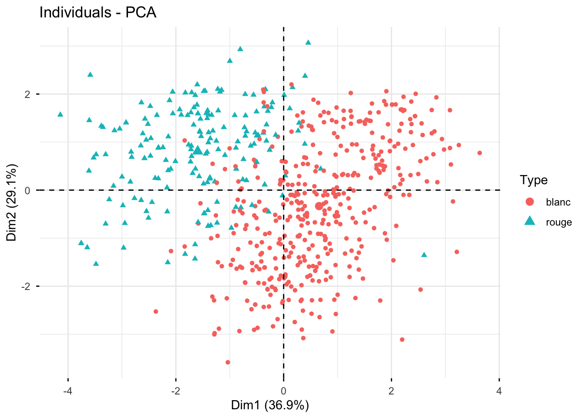
1.2 DBSCAN à paramètres fixés
Question : Dans un premier temps, utilisez l’algorithme DBSCAN avec les paramètres minPts= 7 et eps= 1 à l’aide de la fonction dbscan() de la librairie dbscan. Quels sont les effectifs par classe ? Combien d’individus ne sont pas classés ?
# A COMPLETER
minPts<-7
eps<-1
res.db <- dbscan::dbscan(...)
table(...)fviz_cluster(res.db, wine[,-c(1:2)], geom="point",ellipse="FALSE")+
theme(legend.position="none")+
xlab("")+ylab("")+ggtitle("Avec DBSCAN")
Correction
minPts<-7
eps<-1
res.db <- dbscan::dbscan(wine[,-c(1,2)],eps=eps,minPts=minPts)
table(res.db$cluster)
0 1 2 3 4
138 360 75 22 5 fviz_cluster(res.db, wine[,-c(1:2)], geom="point",ellipse="FALSE")+
theme(legend.position="none")+
xlab("")+ylab("")+ggtitle("Avec DBSCAN")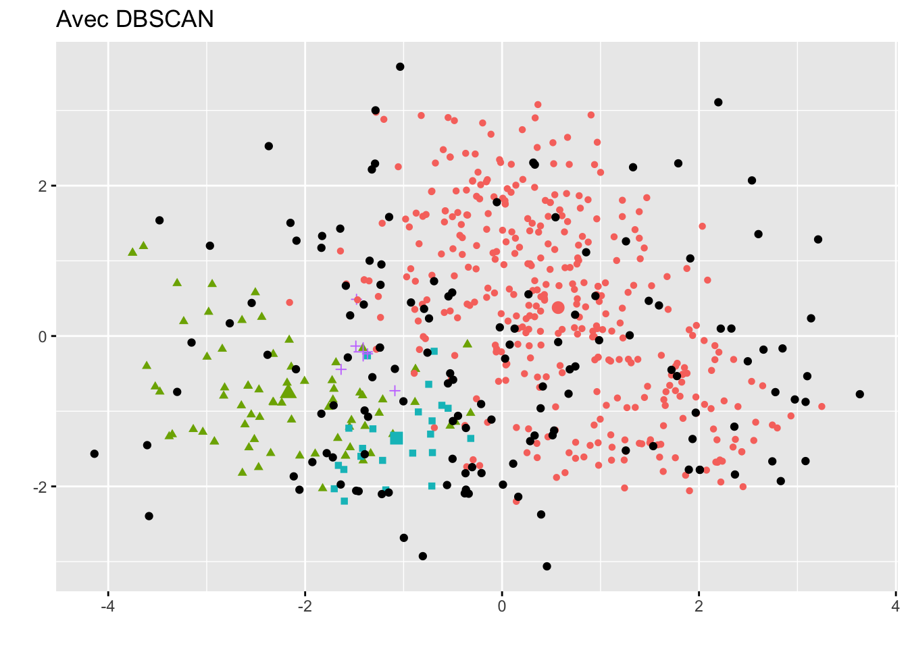
1.3 Influence des paramètres de DBSCAN
Question : Pour étudier l’influence des paramètres minPts et eps, évaluez le nombre de classes obtenues et le nombre d’individus non classés pour différentes valeurs de ces paramètres.
minPts <- ...
eps <- ...
NBCluster <- matrix(0,nrow=length(minPts),ncol=length(eps))
NBNonCl <-matrix(0,nrow=length(minPts),ncol=length(eps))
for (i in 1:length(minPts)){
for (j in 1:length(eps)){
res<-dbscan::dbscan(wine[,-c(1,2)], eps=eps[j], minPts=minPts[i])
NBCluster[i,j] <- ...
NBNonCl[i,j] <- ...
}
}
df<-data.frame(eps=rep(eps,each=length(minPts)),
minPts=as.factor(rep(minPts,length(eps))),
NBCluster=c(NBCluster),
NBNonCl=c(NBNonCl)*100/nrow(wine))
ggplot(df,aes(x=eps,y=NBCluster,col=minPts))+geom_point()+geom_line()
ggplot(df,aes(x=eps,y=NBNonCl,col=minPts))+geom_point()+geom_line()
Correction
minPts <-seq(5,15,1)
eps <-seq(0.5,2,0.1)
NBCluster <- matrix(0,nrow=length(minPts),ncol=length(eps))
NBNonCl <-matrix(0,nrow=length(minPts),ncol=length(eps))
for (i in 1:length(minPts)){
for (j in 1:length(eps)){
res<-dbscan::dbscan(wine[,-c(1,2)], eps=eps[j], minPts=minPts[i])
NBCluster[i,j] <- length(table(res$cluster))-1
NBNonCl[i,j] <- sum(res$cluster==0)
}
}
df<-data.frame(eps=rep(eps,each=length(minPts)),
minPts=as.factor(rep(minPts,length(eps))),
NBCluster=c(NBCluster),
NBNonCl=c(NBNonCl)*100/nrow(wine))
ggplot(df,aes(x=eps,y=NBCluster,col=minPts))+
geom_point()+
geom_line()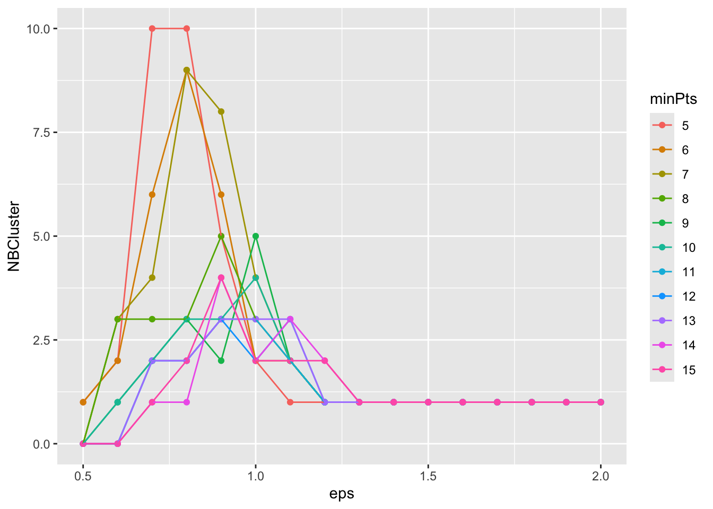
ggplot(df,aes(x=eps,y=NBNonCl,col=minPts))+
geom_point()+
geom_line()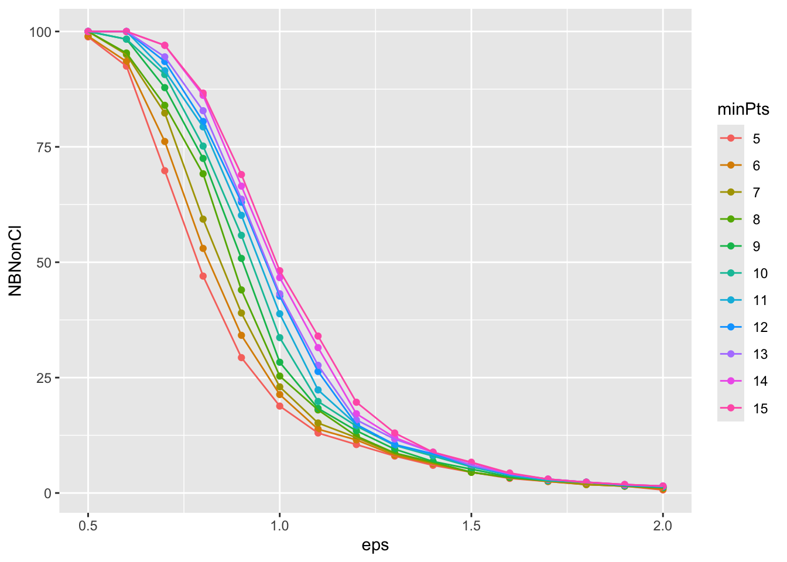
Question : Pour une valeur de minPts=7, tracez le graphe de distance kNN afin de choisir le paramètre eps. Vous pouvez utiliser la fonction kNNdistplot(). Qu’en pensez-vous ?
# A COMPLETER
Correction
dbscan::kNNdistplot(wine[,-c(1,2)], k = 6)
abline(h=1.5)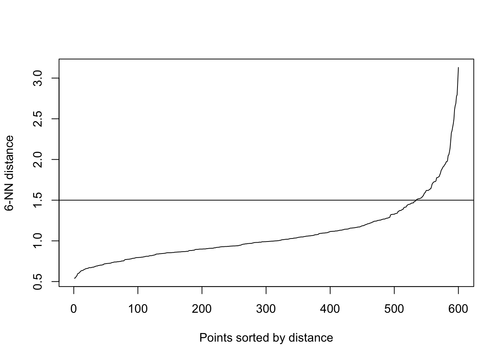
res.db <- dbscan::dbscan(wine[,-c(1,2)],eps=1.5,minPts=7)
table(res.db$cluster)
0 1
27 573 1.4 Comparaison avec les Kmeans
Question : A l’aide des questions précédentes, choisissez des paramètres pour obtenir un clustering à 4 classes. Comparez cette classification avec celle obtenue par les Kmeans pour le même nombre de classes.
# A COMPLETER
Correction
resdb4 <- dbscan::dbscan(wine[,-c(1,2)],eps=0.9,minPts=14)
table(resdb4$cluster)
0 1 2 3 4
399 149 15 15 22 fviz_pca_ind(resacp,habillage=as.factor(resdb4$cluster),geom=c("point"))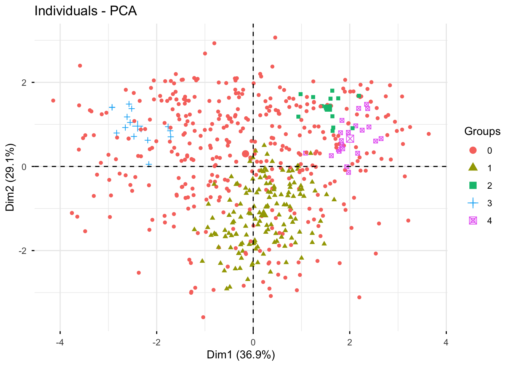
reskmeans4 <- kmeans(wine[,-c(1,2)],4)
table(reskmeans4$cluster)
1 2 3 4
114 100 218 168 fviz_pca_ind(resacp,habillage=as.factor(reskmeans4$cluster),geom=c("point"))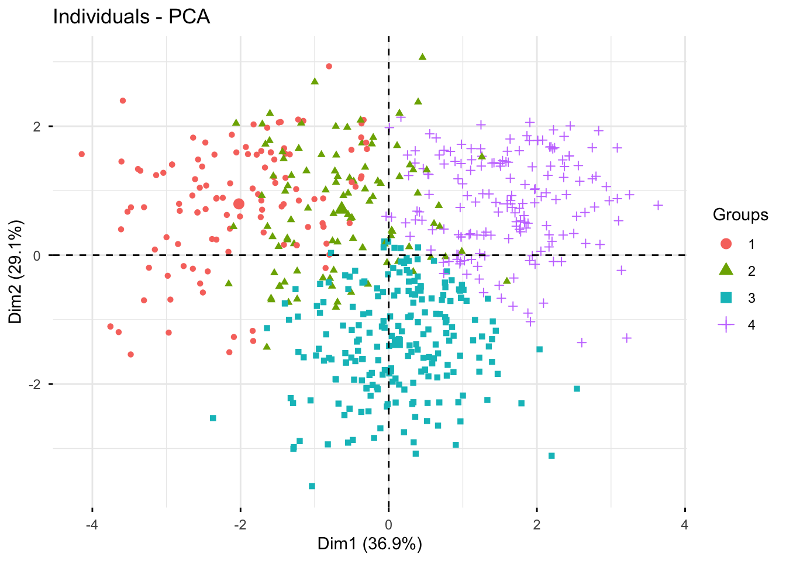
table(reskmeans4$cluster,resdb4$cluster)
0 1 2 3 4
1 99 0 0 15 0
2 99 1 0 0 0
3 82 136 0 0 0
4 119 12 15 0 222 Clustering sur données simulées
Dans cette partie, on considère les données simulées “chameleon_ds7” disponibles dans la librairie seriation.
library(seriation)
data(Chameleon)
ggplot(chameleon_ds7,aes(x=x,y=y))+geom_point()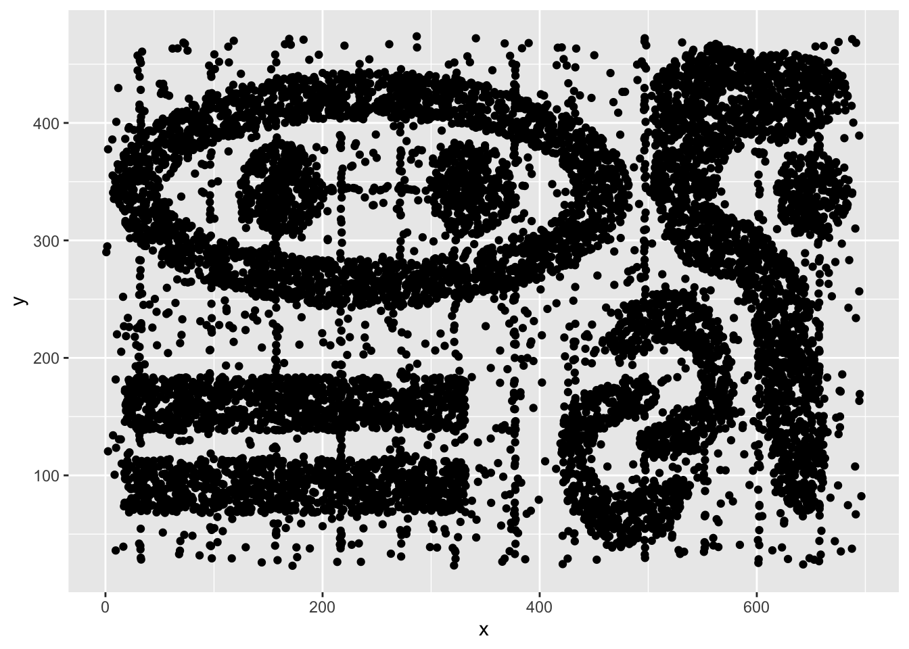
Question : Mettez en place une stratégie de classification de ces données par DBSCAN et par Kmeans. Comparez les résultats. Retrouvez les grandes caractéristiques de ces deux méthodes.
# A COMPLETER
Correction
Par l’algorithme des Kmeans
Kmax<-20
reskmeanscl<-matrix(0,nrow=nrow(chameleon_ds7),ncol=Kmax-1)
Iintra<-NULL
for (k in 2:Kmax){
resaux<-kmeans(chameleon_ds7,centers=k,nstart=10)
reskmeanscl[,k-1]<-resaux$cluster
Iintra<-c(Iintra,resaux$tot.withinss)
}
df<-data.frame(K=2:20,Iintra=Iintra)
ggplot(df,aes(x=K,y=Iintra))+
geom_line()+
geom_point()+
xlab("Nombre de classes")+ylab("Inertie intraclasse")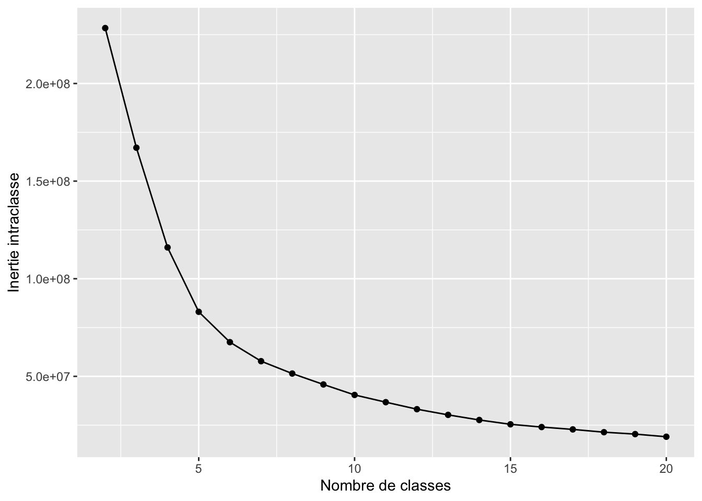
Résultat pour \(K5\) classes :
ggplot(data.frame(chameleon_ds7,clust=as.factor(reskmeanscl[,4])),aes(x=x,y=y,col=clust))+geom_point()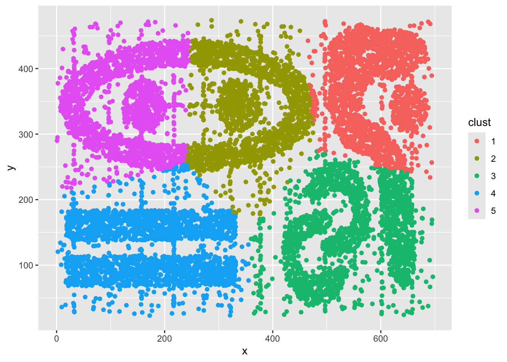
Résultat pour \(K=10\) classes :
ggplot(data.frame(chameleon_ds7,clust=as.factor(reskmeanscl[,9])),aes(x=x,y=y,col=clust))+geom_point()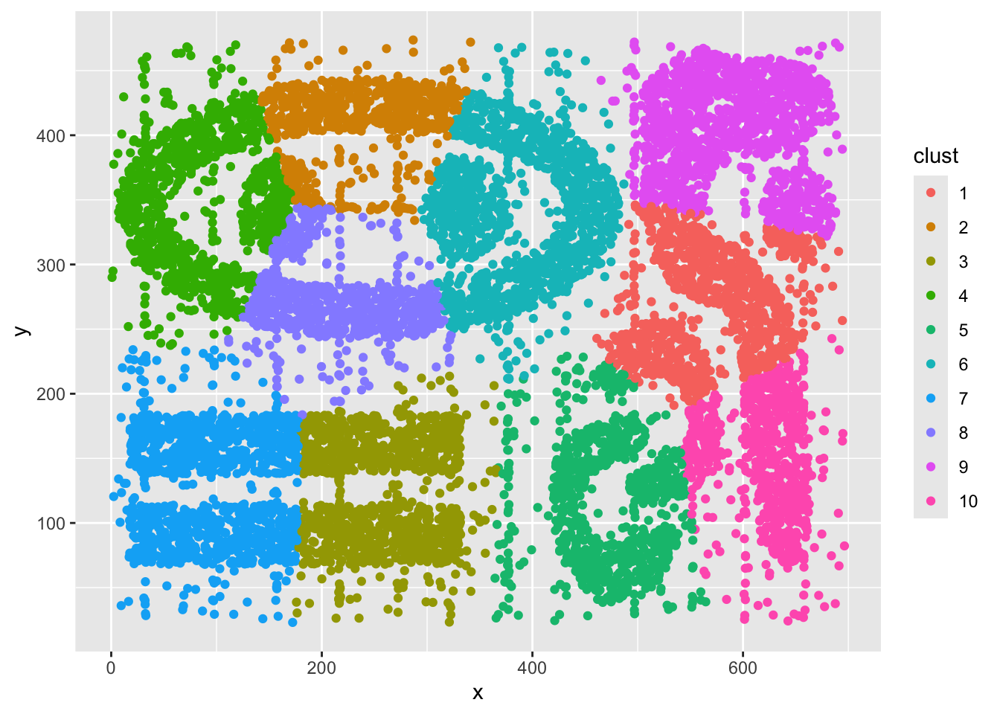
Par l’algorithme DBSCAN :
dbscan::kNNdistplot(chameleon_ds7, k = 24)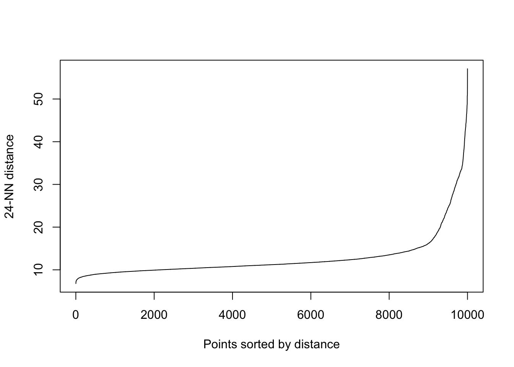
resdb <- dbscan::dbscan(chameleon_ds7,eps=13,minPts=25)
table(resdb$cluster)
0 1 2 3 4 5 6 7 8 9
735 2230 612 2778 1001 337 352 1059 630 266 ggplot(data.frame(chameleon_ds7,clust=as.factor(resdb$cluster)),aes(x=x,y=y,col=clust))+
geom_point()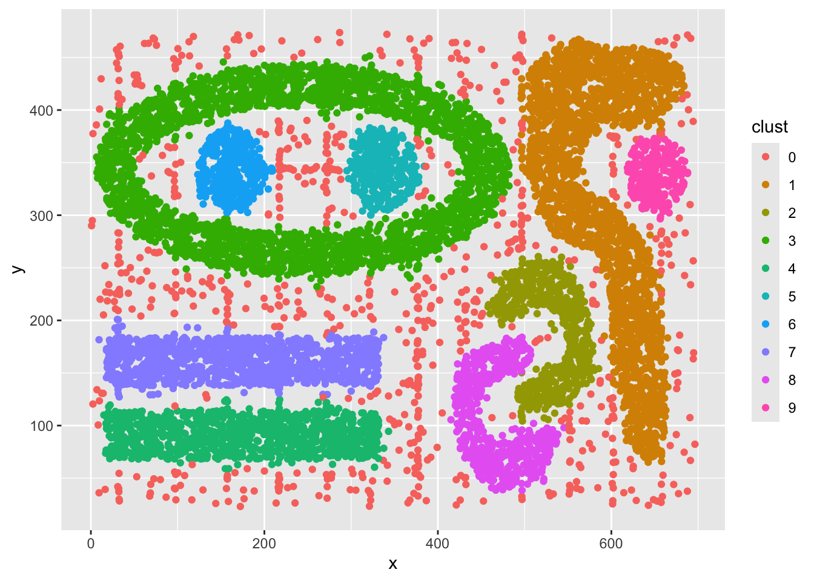